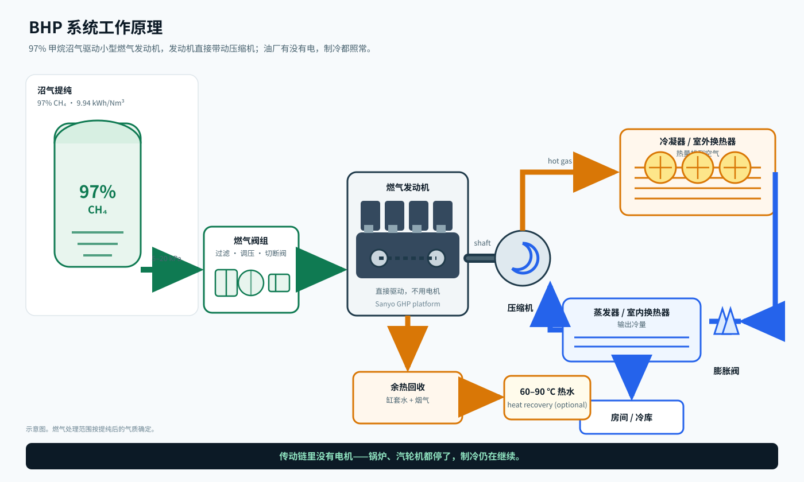
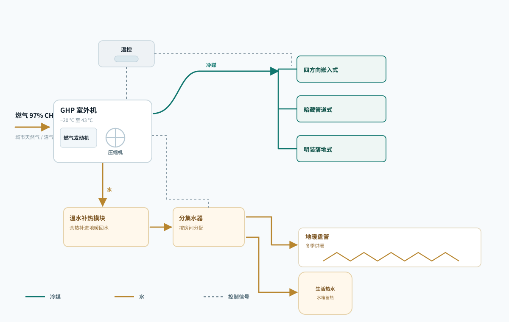

锅炉停了，空调不停。小型燃气发动机直接驱动压缩机，燃料可以是沼气、煤层气、油田伴生气或城市天然气；驱动链里没有电机，制冷不依赖电网。
养殖场、沼气站、食品厂和园区的空调，常常挂在同一条链上：锅炉停、汽机停、厂用电紧张，办公室和宿舍最先失去制冷。BHP 把这条链切断。

它不是吸收式冷水机。发动机对压缩机做机械功，1 方甲烷约出 10 度冷量，比同气量进单效吸收式机组大约多 50%。

同一套燃气机平台还有多功能型：室外机出冷媒供室内机风冷，同时经水侧换热带地暖与生活热水。发动机余热不再是废热，而是冬季的补热源。

BHP 不是只能烧沼气。发动机按 97% 甲烷标定，前端按气源配净化：沼气提纯、瓦斯浓缩或掺混、伴生气脱重烃、天然气调压脱硫。
| 气源 | 甲烷浓度 | 前端处理 | 典型场景 |
|---|---|---|---|
| 沼气 | 50–65% | 脱硫至 H₂S ≤20 ppm、脱水，提纯至 ≥97% 或配前端净化模块 | 养殖场、食品废水、垃圾填埋、POME |
| 煤层气 / 瓦斯 | 30–80% | 浓缩或掺混至 ≥90%，精脱硫、脱水、稳压 | 煤矿瓦斯泵站、瓦斯电站、矿区生活区 |
| 油田伴生气 | 60–90% | 脱重烃、脱硫、脱水、稳压 | 边远井、集输站、放空火炬气 |
| 城市天然气 | 90–99% | 调压、精脱硫（含加臭剂）、过滤 | 园区、酒店、医院、数据中心 |
浓度低于 30% 的煤层气需先浓缩或与天然气掺混；原沼气直接进机需提纯至 97% 甲烷。具体以气样分析与流量核算为准。
燃料输入按额定制冷量与燃气 COP 1.0 口径；余热为制冷模式下可回收的发动机余热，热水温升按 50 K 估算。
| 机型 | 制冷量 | 燃气输入 | 97% 甲烷耗量 | 可回收余热 | 热水 50 K |
|---|---|---|---|---|---|
| BHP-30 | 30 kW | 30.0 kW | 3.0 Nm³/h | 7.5 kW | 129 L/h |
| BHP-60 | 60 kW | 60.0 kW | 6.0 Nm³/h | 15.0 kW | 258 L/h |
| BHP-120 | 120 kW | 120.0 kW | 12.1 Nm³/h | 30.0 kW | 517 L/h |
| BHP-240 | 240 kW | 240.0 kW | 24.1 Nm³/h | 60.0 kW | 1,034 L/h |
| BHP-480 | 480 kW | 480.0 kW | 48.3 Nm³/h | 120.0 kW | 2,069 L/h |
更大负荷多台并联。性能数据为参考值，每个项目以厂家保证书与现场气样为准。原料为原沼气时，需先提纯至 97% 甲烷或配置前端净化。
用自产沼气给办公区、宿舍、化验室供冷，余热回用发酵罐或生活热水。
屠宰、酿造、果蔬加工有稳定沼气与冷负荷，替代电空调与柴油机组。
电网薄弱或增容昂贵的园区、矿区、岛屿，用燃气空调解决夏季制冷。
伴生气或天然气就地驱动，为值班室、控制室与生活区供冷供热。
抽采瓦斯经浓缩或掺混后驱动 BHP，为矿区办公、宿舍与井口值班室供冷供热。
对供电可靠性要求高，BHP 不占用电网容量，可做备用冷源。
天然气价格合适时，BHP 同时供冷与热水，降低夏季电费峰值。